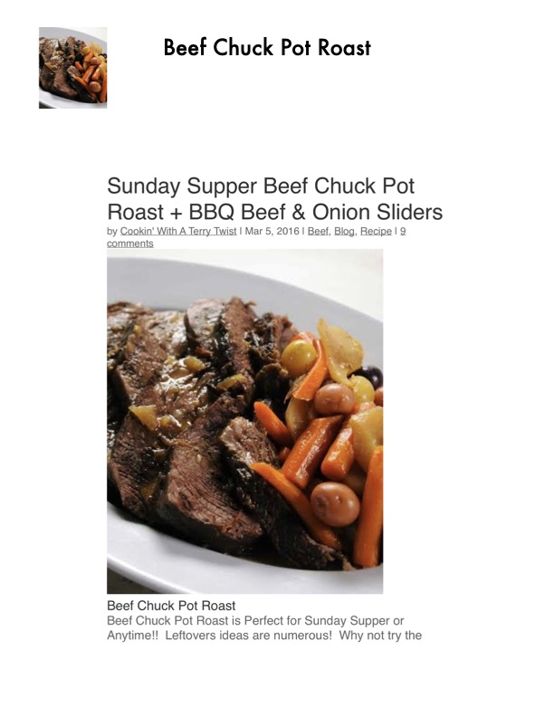

Sunday Supper Beef Chuck Pot Roast + BBQ Beef & Onion Sliders

Original cookbook page 168
Complete recipe for beef chuck pot roast perfect for Sunday supper, plus instructions for transforming leftovers into delicious BBQ beef and onion sliders for an easy Monday meal.
Prep: 30 minutes • Cook: 3 hours (pot roast) + 20 minutes (sliders) • Total: 3 hours 50 minutes total
Ingredients
- FOR POT ROAST:
- 3-4 pound Beef Chuck Pot Roast (boneless or bone in)
- 1 tablespoon canola or olive oil
- Salt and black pepper to taste
- 1 cup diced onion
- 3 cloves minced garlic
- 3-4 large carrots, cut in ½ inch pieces
- 2 bay leaves
- ½ teaspoon dried thyme
- ½ teaspoon dried marjoram
- 1 teaspoon brown sugar (optional)
- ¼ cup ketchup
- ½ cup dry red wine
- 1 tablespoon worcestershire sauce
- 1 cup Kitchen Basics© Beef Stock, regular or low sodium
- FOR BBQ SLIDERS (using leftovers):
- Leftover beef pot roast, cut into small bite size pieces or shredded with a fork
- 1-2 large spanish or vidalia onions, thinly sliced
- 2 tablespoons olive oil
- ¼ cup water
- ½ to 1 cup BBQ sauce (store bought or homemade)
- Slider buns or any type of bun
Instructions
- FOR POT ROAST: Preheat oven to 350°F. In heavy dutch oven, large enough to place the beef in, heat oil until hot over medium high heat. Pat beef roast dry with paper towels, sprinkle with salt and pepper on both sides.
- Cook until nicely browned on one side (3-5 minutes), turn over. Add chopped onions to pan around the beef (not on top), and brown roast on other side, stirring onions once or twice.
- Add minced garlic and red wine around the beef. Cook until wine is reduced by half and add carrots, beef stock, Worcestershire sauce, ketchup, bay leaf, herbs and sugar.
- Place covered dutch oven in 350°F oven for 3 hours, until beef is 'fork tender'. Insert a fork into the roast and it should slide out easily.
- FOR BBQ SLIDERS: Cut up leftover beef pot roast into small bite size pieces, or shred with a fork. Tip: this can be done before you put the roast away to save prep time later!
- Thinly slice 1-2 large spanish or vidalia onions. Heat 2 tablespoons olive oil in large nonstick skillet over medium high heat until hot. Add onion, reduce heat to medium, and cook until softened, about 10-15 minutes, stirring often.
- Add ¼ cup water and ½ to 1 cup BBQ sauce (amount depends on how much beef you have and how saucy you like it). Heat until simmering gently, cover and cook for 5 minutes.
- Add leftover pot roast and cook just until heated through. Do not overcook or beef might get tough.
- Serve beef on slider buns. Great with coleslaw and potato chips.
Recipe #168 from collection